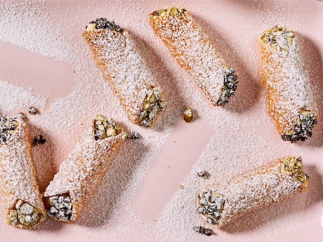

Air Fryer Cannolis Recipe

Air Fryer Cannolis
The air fryer’s strengths span far beyond crisping up frozen French fries. Here, the countertop appliance provides a perfect shortcut to homemade cannoli (a traditionally labor intensive treat to make). In this impressive air fryer dessert, prepared pie dough is used to create the crunchy, buttery richness you’d expect from a deep-fried cannoli shell. Though all of the ingredients for this air-fryer cannoli are easily found at any supermarket, you may need to order the cannoli tubes if you do not already have a set. (However, you can also use aluminum foil formed into a cylindrical shape in lieu of the tubes.) Pro-tip: Don’t skip draining your ricotta cheese! This essential step keeps the filling from being too moist—leading to soggy cannoli shells.
Ingredients
- 1 (24-oz.) pkg. whole-milk ricotta cheese
- ½ cup powdered sugar, plus more for dusting
- 1 tablespoon orange zest (from 1 orange)
- ½ teaspoon kosher salt
- 1 cup turbinado sugar
- All-purpose flour, for working surface
- 1 (14.1-oz.) pkg. refrigerated piecrusts
- 1 large egg white, beaten
- ½ cup mini chocolate chips
- ½ cup coarsely chopped roasted pistachios
Steps
- Place ricotta in a strainer lined with cheesecloth, and press until excess liquid drips out. Place strained ricotta in a medium bowl, and stir in powdered sugar, orange zest, and salt. Spoon into a piping bag or a zip-top bag. Chill until ready to use. Place turbinado sugar on a plate. Set aside.
-
Roll out piecrusts on a lightly floured surface to 1/16-inch thickness. Cut out 16 (3 1/2-inch) circles. Wrap circles around cannoli molds, brushing edge with some of the egg white to seal. Lightly brush entire wrapper with some of the egg white. Roll in turbinado sugar to coat.
-
Add a few at a time to lightly coated (with cooking spray) basket about 3/4-inch apart. Cook at 400°F until crisp and golden, 5 to 7 minutes. Carefully remove with tongs, and cool about 1 minute before gently twisting cannoli mold out of shell. Let cool completely, about 10 minutes. Repeat with remaining shells.
-
Place chocolate chips and pistachios in separate small bowls. Pipe ricotta mixture into each cooled cannoli shell. Dip 1 end in either chocolate chips or pistachios. Dust with powdered sugar. Serve immediately.